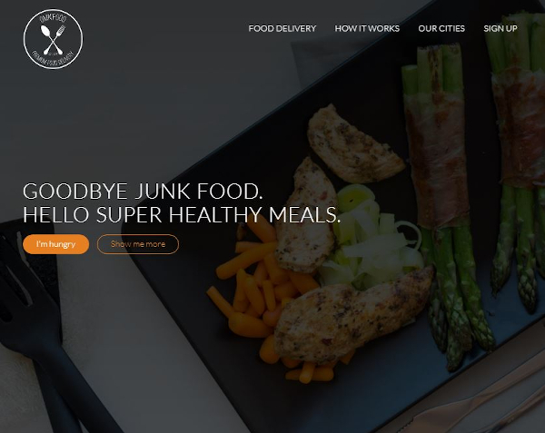

Projects
Omnifood: smooth scroll, sticky navigation, fully responsive. Created with Javascript, HTML5, and CSS3.
Visit the repository.
Miro: fully responsive, animation. Created with CSS3 and HTML5.
Visit the repository.
Wallet: glassmorphism, mibile-first design, animation. Created with CSS3 and HTML5.
Visit the repository.